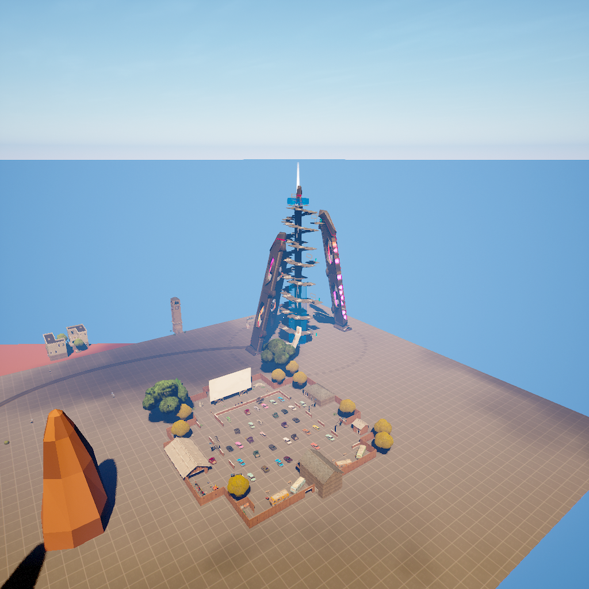

The canyon
Drive into the race, pick up weapons and find your route through the opening course.

Fortnite · COLTRAN Studios
Race. Survive. Reign.
Start with a canyon race, fight through the Killing Fields and make your final push for the Power Tower.
Fortnite island code
7230-6949-1801
This is not sponsored, endorsed, or administered by Epic Games, Inc.
Open Fortnite, search this island code and select the published island. Fortnite is required; this page does not download or install the game.
Read the development log
Drive into the race, pick up weapons and find your route through the opening course.
Leave the road behind and survive a desert combat zone on the way to the tower.
Reach the summit and defend your claim. Getting there is only part of the challenge.

Built in the open, tested in play
Follow the work behind the driving, combat and tower climb. Development posts distinguish playable progress from what still needs testing.
Read the November 16 development story →